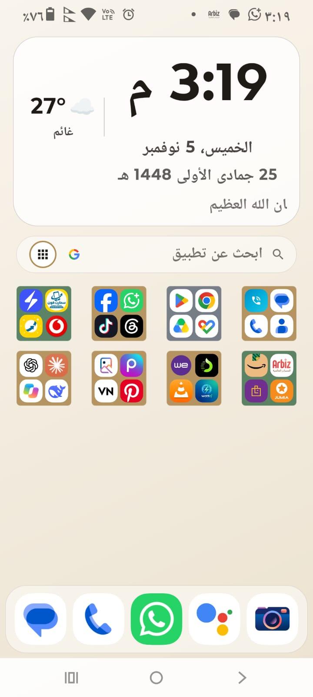
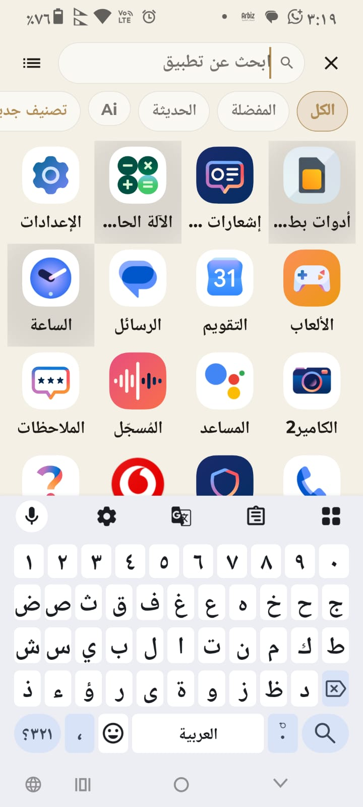
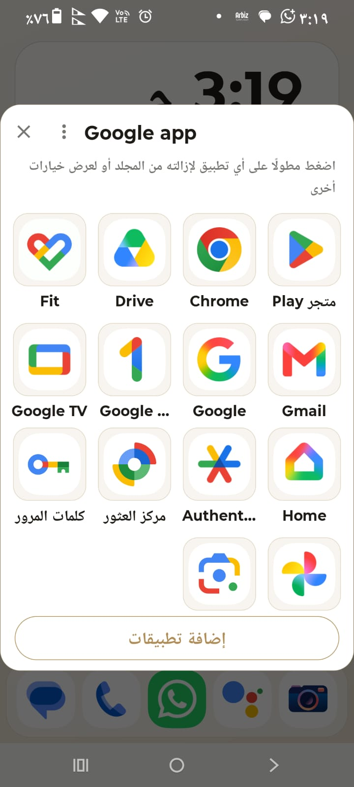
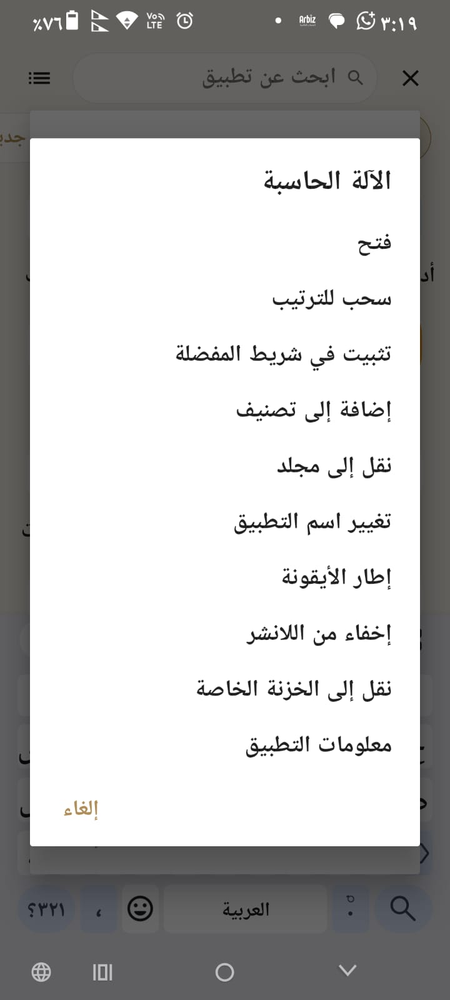
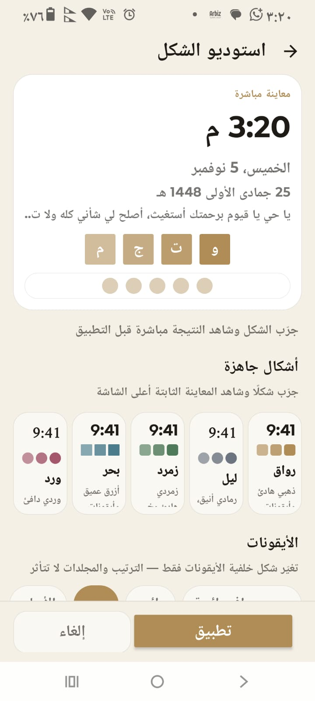
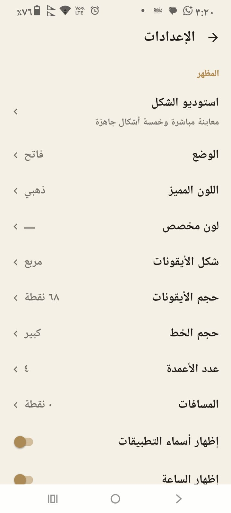

بحث بيفهم العربية
اكتب «كله» يطلعلك «كلّ»، من غير تشكيل ومن غير ما تهتم بالهمزة. بحث فوري في كل التطبيقات، وشرائح للكل والمفضلة والحديثة.
لانشر أصلي خفيف، بدون إعلانات وبدون تتبّع: بحث فوري بيتعامل مع العربية صح (من غير تشكيل ومن غير فرق همزة)، مجلدات بألوان، «مجلد شاشة» بحجم شاشة هاتف مصغّرة، وخزنة للتطبيقات برقم سري. بيشتغل على أي أندرويد من إصدار 6.0 وفوق.






الشاشة الرئيسية: الساعة والتاريخ الهجري والطقس، والمجلدات الملوّنة وشريط المفضلة.
لقطات حقيقية من هاتف أندرويد 16. اضغط أي صورة تشوفها بالحجم الكامل.
كل نقطة دي شغّالة فعلًا في الإصدار المرفوع، مش وعد لإصدار جاي.
اكتب «كله» يطلعلك «كلّ»، من غير تشكيل ومن غير ما تهتم بالهمزة. بحث فوري في كل التطبيقات، وشرائح للكل والمفضلة والحديثة.
شاشة هاتف مصغّرة على الرئيسية بتعرض تطبيقاتها. مرّر جواها بإصبعك من غير ما تفتحها، وخمس مستويات حجم جاهزة.
اختر تطبيقات تحط وراها رقم سري من 4 لـ 8 أرقام، مع فتح بالبصمة أو الوجه وقفل تلقائي لما تسيب الشاشة.
بيتحدّث كل نص ساعة من Open-Meteo، باختيار مدينة من 20 مدينة أو بمتابعة موقعك تلقائيًا. ومفيش إنترنت؟ يفضل آخر قراءة قدامك.
اضغط مطوّل على أيقونة ← «تغيير اسم التطبيق»، والاسم الجديد يبان في الرئيسية والدرج والمفضلة والبحث. ومعاه إطار ملوّن حوالين الأيقونة.
النسخة اللي في ملف تعريف تاني بتظهر لوحدها باسمها متبوع بـ«(نسخة)» وشارة صغيرة على الأيقونة، وبتفتح ببياناتها هي.
صور مضمّنة جوه التطبيق نفسه — من غير إنترنت ولا حساب — مع خلفيات متدرجة، وصورة من المعرض بقص ومعاينة، أو صورة من رابط تلصقه.
خمس بطاقات متحركة بعد التنصيب مباشرة تعلمك الإعدادات، إضافة تطبيق، عمل مجلد، شريط المفضلة، والترتيب بالسحب. مرة واحدة، وتقدر تعيده من الإعدادات.
ترتيبك كلّه — الإعدادات، المجلدات، المخفي، أسماء التطبيقات، الخلفية — يتصدّر في ملف JSON وترجّعه في أي هاتف.
| الصلاحية | بتتستخدم ليه |
|---|---|
| عرض التطبيقات | أي لانشر محتاجها عشان يوريك تطبيقاتك أصلًا. |
| تعيين خلفية | لما تختار بنفسك «تعيين كخلفية للجهاز». |
| البصمة | فتح الخزنة. |
| الإنترنت | جلب الطقس فقط. مفيش أي بيانات استخدام بتخرج من الجهاز. |
| الموقع التقريبي | اختيارية، وبتطلب مرة واحدة بس لو اخترت «موقعي الحالي» للطقس. |
مفيش وصول لجهات الاتصال، ولا للرسائل، ولا لخدمات إمكانية الوصول، ولا خدمات شغّالة في الخلفية.
RWAKAN.apk
تنزيل الملفروقان بيتوزع من هنا مباشرة (مش من Google Play). لو ثبتّه فوق نسخة قديمة من نفس روقان ترتيبك بيتحفظ؛ أما لو كنت ثابت نسخة تجريبية مختلفة التوقيع فلازم تحذفها الأول — صدّر نسخة احتياطية من إعداداتك قبلها.
لأنه بيتوزع دلوقتي كملف مباشر. التحميل من هنا محتاج تسمح لمرة واحدة بمصدر غير معروف، وبعدين التطبيق بيتحدّث طبيعي لو نزّلت ملفًا بإصدار أعلى.
لأ. أي وقت تقدر ترجع شاشتك الأساسية من إعدادات النظام ← التطبيقات ← التطبيقات الافتراضية، وترتيب روقان بيتحفظ لما ترجعه.
من داخل الخزنة فيه «إعادة ضبط الخزنة»: بيحذف الرقم السري ويرجّع كل تطبيقات الخزنة للانشر. مفيش استرجاع للرقم نفسه — ده مقصود في التصميم.
لأ. الاتصال الوحيد اللي بيحصل هو سؤال الطقس لـ Open-Meteo، ومرة واحدة بس لو سمحت بالموقع عشان يحوّل إحداثياتك لمنطقتك. ترتيب شاشتك وكل بياناتك جوه جهازك.
أقل إصدار مدعوم 6.0 (API 23)، والتجربة الفعلية كانت على أندرويد 13 و16.